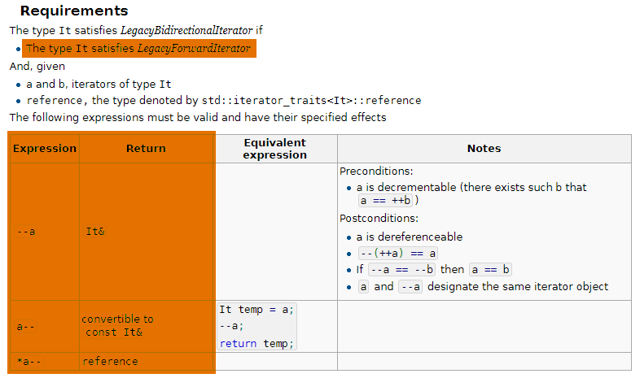

Itérateurs
Normalement, avec tout ce que vous avez vu jusqu’ici, vous devriez être capable d’utiliser correctement un itérateur :
- déréférencement avec
*it - incrémentation avec
++it - récupérer les itérateurs de début et de fin d’un conteneur avec
ctn.begin()etctn.end() - insérer un élément dans un conteneur avec
auto it_on_new = ctn.insert(it, new_value) - supprimer un élément d’un conteneur avec
auto it_on_next = ctn.erase(it)
Vous allez maintenant voir ce qu’il faut faire pour implémenter vos propres itérateurs.
Catégories d’itérateurs
Les itérateurs ne permettent pas tous de faire la même chose.
Par exemple, l’itérateur d’une liste doublement chaînée permettra aussi bien d’avancer que de reculer, alors que l’itérateur d’une liste simplement chaînée ne permettra que d’avancer.
Dans le premier cas, l’itérateur disposera donc des opérateurs ++ et --, alors que dans le second cas, seul ++.
Pour savoir quelles opérations sont disponibles pour tel ou tel type d’itérateur, il faut identifier sa catégorie. Vous pouvez trouver sur cette page toutes les catégories d’itérateurs présents dans la STL. Vous pouvez ensuite cliquer sur chacune des catégories pour obtenir la liste des conditions à remplir pour qu’une classe puisse être assimilée à un itérateur de cette catégorie.
Par exemple, pour implémenter un itérateur bidirectionnel (c’est-à-dire qui permet aussi bien d’avancer que de reculer) :

- il faut déjà satisfaire aux exigences du
ForwardIterator(= itérateur qui permet d’avancer dans une plage) - il faut implémenter l’opérateur de décrémentation et l’opérateur de post-décrémentation, avec les bons types de retour
- il faut que
*it--(déréférencement du résultat de la post-décrémentation) soit de typereference(voir plus bas).
LegacyInputIterator
Il s’agit d’un itérateur qui permet de lire des valeurs depuis une plage d’éléments, un conteneur, ou encore un flux.
Ce type d’itérateur ne garantit pas que l’on pourra repasser plusieurs fois dans l’ensemble avec les mêmes résultats.
Par exemple, on peut avoir un itérateur qui “consomme” le flux de données au fur-et-à-mesure qu’on l’incrémente.
Ex: istream_iterator
LegacyForwardIterator
Pareil que LegacyInputIterator, mais ce coup-ci, on a la garantie qu’on peut reparcourir la plage d’éléments autant de fois qu’on en a envie.
Ex: forward_list<T>::iterator
LegacyBidirectionalIterator
Pareil que LegacyForwardIterator, mais on a en plus la possibilité de décrémenter l’itérateur, et donc de parcourir la plage à l’envers.
Ex: list<T>::iterator
LegacyRandomAccessIterator
Il s’agit d’un LegacyBidirectionalIterator, mais qui peut être déplacé sur n’importe quel élément en temps constant.
Ex: deque<T>::iterator
LegacyContiguousIterator
Pareil que LegacyRandomAccessIterator, mais dont les éléments sont forcément contiguës en mémoire.
Ex: vector<T>::iterator, string::iterator, …
LegacyOutputIterator
Ce type d’itérateur permet de modifier les éléments de la plage, du conteneur, ou du flux parcouru.
Ex: back_insert_iterator, ostream_iterator, vector<T>::iterator, deque<T>::iterator, …
Implémenter un itérateur
Afin d’implémenter un itérateur, il faut commencer par déterminer ce qu’il est censé permettre de faire. Cela revient à décider à quelle catégorie il doit appartenir.
Pour illustrer ce propos, on va implémenter un itérateur qui permet d’avancer de 3 éléments dans un vector<int> à chaque itération.
Il s’agira donc d’un ForwardIterator.
Nous allons partir de la classe suivante :
class JumpIterator
{
public:
JumpIterator(std::vector<int>& values)
: _it { values.begin() }
{}
private:
// Pour se simplifier la vie, on va se servir du véritable itérateur du vector.
std::vector<int>::iterator _it;
};Pour satisfaire les différentes exigences du ForwardIterator, il faut commencer par satisfaire les “sous-catégories” LegacyIterator et LegacyInputIterator.
On devra également s’occuper s’arranger pour être un LegacyOutputIterator, car l’itérateur devrait permettre de modifier le contenu du tableau.
LegacyIterator
* CopyConstructible : Normalement, c’est déjà bon, car le constructeur de copie devrait être généré automatiquement.
On peut tester que c’est bien le cas en essayant de compiler le code suivant :
std::vector<int> values { 1, 2, 3 };
JumpIterator original { values, 2 };
JumpIterator copy { original };* CopyAssignable : Pareil. On peut vérifier avec :
std::vector<int> values { 1, 2, 3 };
JumpIterator original { values, 2 };
JumpIterator copy { values, 5 };
copy = original;* Destructible : Si ça n’avait pas été déjà le cas, les deux snippets précédents n’auraient pas compilés.
* Swappable : On vérifie que c’est bon en compilant le code suivant :
std::vector<int> values { 1, 2, 3 };
JumpIterator original { values, 2 };
JumpIterator copy { values, 5 };
std::swap(copy, original);* std::iterator_traits<JumpIterator> doit définir les types value_type, difference_type, reference, pointer et iterator_category.
L’intérêt de définir ces 5 types, c’est de rendre l’itérateur compatible avec les algorithmes de la STL.
class JumpIterator
{
public:
// value_type, reference et pointer doivent correspondre au type renvoyé par le déréférencement de l'itérateur.
using value_type = int;
using reference = int&;
using pointer = int*;
// difference_type permet de définir le type qui sera retourné par la fonction std::distance.
using difference_type = size_t;
// iterator_category permet d'indiquer la catégorie de notre itérateur, afin que le compilateur puisse choisir des versions optimisées des algorithmes.
using iterator_category = std::forward_iterator_tag;
JumpIterator(std::vector<int>& values)
: _it { values.begin() }
{}
private:
// Pour se simplifier la vie, on va se servir du véritable itérateur du vector.
std::vector<int>::iterator _it;
};* L’expression *it est valide : Pour cela, il faut ajouter l’operator*() à la classe.
class JumpIterator
{
public:
...
int operator*() const { return *_it; }
private:
// Pour se simplifier la vie, on va se servir du véritable itérateur du vector.
std::vector<int>::iterator _it;
};* L’expression ++it est valide et renvoie un JumpIterator& : On ajoute maintenant loperator++().
class JumpIterator
{
public:
...
JumpIterator& operator++()
{
// Chaque fois que JumpIterator avance de 1, on avance de 3 dans le tableau.
std::advance(_it, 3);
return *this;
}
private:
// Pour se simplifier la vie, on va se servir du véritable itérateur du vector.
std::vector<int>::iterator _it;
};Pour implémenter l’opérateur de pré-incrément (++it), il faut définir operator++(), tandis que pour implémenter l’opérateur de post-incrément (it++), il faut définir operator++(int).
Et que faut-il faire du int ? Et bah, rien.
Sa seule utilité, c’est de pouvoir définir un opérateur n’ayant pas la même signature que l’opérateur de pré-incrément.
LegacyInputIterator
* EqualityComparable : On doit définir operator==(const JumpIterator&) const.
class JumpIterator
{
public:
...
bool operator==(const JumpIterator& other) const { return _it == other._it; }
...
};* L’expression i != j doit renvoyer !(i == j) : On définit operator!=(const JumpIterator&) const.
class JumpIterator
{
public:
...
bool operator==(const JumpIterator& other) const { return _it == other._it; }
bool operator!=(const JumpIterator& other) const { return !(*this == other); }
...
};* *i doit être de type reference, et reference doit être convertible en value_type : on modifie le type de retour de operator*() pour renvoyer un int&.
class JumpIterator
{
public:
...
int& operator*() { return *_it; }
// On en profite pour ajouter la version const.
const int& operator*() const { return *_it; }
...
};* L’expression i->m doit être équivalent à (*i).m : on ajoute l’operator->.
Pour obtenir l’effet attendu, il faut savoir que operator-> doit retourner l’adresse de l’objet à déréférencer, c’est-à-dire un value_type* et non pas un value_type&.
class JumpIterator
{
public:
...
int* operator->() { return &(*_it); }
// On en profite pour ajouter la version const.
const int* operator->() const { return &(*_it); }
...
};Notez bien qu’écrire &(*_it) n’est pas pas équivalent à écrire juste _it.
En effet, *_it permet de récupérer une référence sur l’entier pointé par _it, et &(*_it) permet donc d’obtenir l’adresse de cet entier.
L’expression &(*x) est donc équivalente à x lorsque x est un pointeur, mais c’est rarement le cas lorsque x est un objet.
* L’expression i++ permet d’incrémenter i et *it++ doit permettre de récupérer l’ancien contenu.
On implémente l’operator++(int) (opérateur de post-incrément).
class JumpIterator
{
public:
...
JumpIterator operator++(int)
{
auto prev = *this;
++(*this);
return prev;
}
...
};LegacyForwardIterator
* DefaultConstructible : On ajoute un constructeur par défaut à la classe.
class JumpIterator
{
public:
...
JumpIterator() = default;
JumpIterator(std::vector<int>& values)
: _it { values.begin() }
{}
...
};Ecrire = default derrière une fonction permet de demander au compilateur d’essayer de générer l’implémentation par défaut pour cette fonction.
Bien sûr, cela ne fonctionne que pour les fonctions qui peuvent être générées par le compilateur (constructeur par défaut, par copie, opérateurs d’assignation, destructeur).
* Il est possible de parcourir autant de fois qu’on veut une plage d’éléments avec notre itérateur, sans que le résultat change.
C’est bien le cas ici, puisque les opérateurs de déréférencement et d’incrémentation ne modifie pas la structure ni le contenu du vector.
* Le type reference est int& ou const int& : C’est bien ce qu’on a déjà ici.
* Si deux itérateurs pointent sur le même conteneur, alors on peut les comparer avec operator== et operator!= :
C’est censé être le cas ici, puisqu’on se sert de vector<int>::iterator.
Ce dernier étant un RandomAccessIterator, il devrait vérifier toutes les exigences de ForwardIterator.
* L’expression i++ doit être de type JumpIterator et *i++ de type int& : on a déjà les bons types.
LegacyOutputIterator
* L’expression *it = ... est valide : C’est déjà le cas, puisque *it renvoie un int&.
* ++it renvoie une référence sur it : C’est déjà le cas aussi.
* it++ renvoie une valeur convertible en const JumpIterator& : C’est bon.
* L’expression *it++ = ... est équivalente à assigner le contenu pointé par l’itérateur, puis d’incrémenter l’itérateur.
Code final
Voici ce que vous devriez avoir obtenu :
class JumpIterator
{
public:
// value_type, reference et pointer doivent correspondre au type renvoyé par le déréférencement de l'itérateur.
using value_type = int;
using reference = int&;
using pointer = int*;
// difference_type permet de définir le type qui sera retourné par la fonction std::distance.
using difference_type = size_t;
// iterator_category permet d'indiquer la catégorie de notre itérateur, afin que le compilateur puisse choisir des versions optimisées des algorithmes.
using iterator_category = std::forward_iterator_tag;
JumpIterator() = default;
JumpIterator(std::vector<int>& values)
: _it { values.begin() }
{}
JumpIterator& operator++()
{
// Chaque fois que JumpIterator avance de 1, on avance de 3 dans le tableau.
std::advance(_it, 3);
return *this;
}
JumpIterator operator++(int)
{
auto prev = *this;
++(*this);
return prev;
}
int& operator*() { return *_it; }
const int& operator*() const { return *_it; }
int* operator->() { return &(*_it); }
const int* operator->() const { return &(*_it); }
bool operator==(const JumpIterator& other) const { return _it == other._it; }
bool operator!=(const JumpIterator& other) const { return !(*this == other); }
private:
// Pour se simplifier la vie, on va se servir du véritable itérateur du vector.
std::vector<int>::iterator _it;
};Comme vous pouvez le constater, ce résultat n’est finalement pas si impressionnant que ça.
On a les constructeurs, des opérateurs d’incrémentations, des opérateurs de déréférencement, des opérateurs de comparaisons, et la définition des types nécessaires à l’utilisation des fonctions de <algorithm>.
Au final, le plus compliqué, c’était de réussir à déchiffrer la documentation… Heureusement, implémenter des itérateurs, ce n’est pas quelque chose que vous aurez besoin de faire tous les jours.